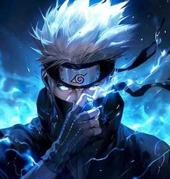
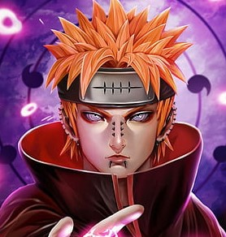
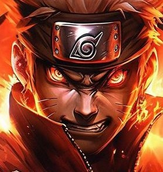
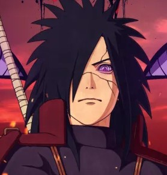
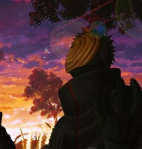
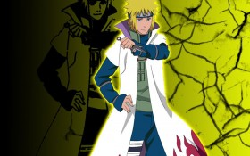
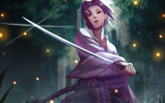

kakashi hatake
Copy ninja
Alias: Kakashi of the Sharinganthe Copy Ninja
>Nickname : Kakashi of the Sharingan, The Copy Ninja
Title : Retired Sixth Hokage.
Family : Sakumo Hatake (father, deceased)

pain
wara wara wa pain
About : As Pain, he has become serious, aloof, cynical, brutal and relentless. He believes that the suffering he experienced enlightened him, making him rise above humanity toward godhood.

naruto
naruto uchumaki
Notable relatives : Minato Namikaze (father, deceased) Kushina Uzumaki (mother, deceased) Jiraiya (godfather, deceased) Hinata Hyuga (wife) Boruto Uzumaki (son) Himawari Uzumaki (daughter) Kawaki (adoptive son) Hanabi Hyuga (sister-in-law) Hizashi Hyuga (uncle-in-law, deceased) Hiashi Hyuga (father-in-law) Neji Hyuga (cousin-in-law, deceased)

madara
ghost of uchiha
Relatives : Uchiha (father)
Izuna Uchiha (brother)
Ninja status :Ghost of the Uchiha and Rogue ninja

obito
hacker uchiha
Ninja Rank : Chunin
ōjutsu or Kekkei Genkai : Sharingan
(All Levels) and Mangekyō Sharingan (That he shared with Kakashi Hatake
before his passing. He was the first one to break through the tsukomi.)

minato
yellow flash
Jutsu: Flying Thunder God Technique, Summoning Technique, MORE
Children: Naruto Uzumaki
Notable aliases: Fourth Hokage, Minato

sasuke
brother of itachi
Notable relatives:Itachi Uchiha (older brother, deceased) Sakura Uchiha (wife) Sarada Uchiha (daughter)